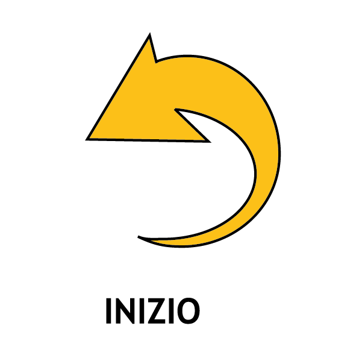
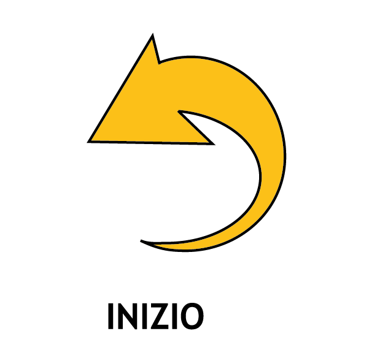

Cittadini a basso consumo

La città intelligente è abitata da cittadini che ne sfruttano
in modo consapevole e sostenibile le risorse. Il
cittadino della smart city produce energia pulita, la
utilizza e la scambia con la rete e, grazie alle tecnologie,
conosce in tempo reale i suoi consumi. La sua casa
è un edificio verde, costruito con tecniche di green
building e governato dalla domotica, che lo aiuta a
evitare sprechi dovuti a dimenticanze e malfunzionamenti.
I sistemi domotici gestiscono gli elettrodomestici
in modo razionale, azionano tapparelle, termosifoni
e condizionatori in funzione della temperatura e
della luce del sole, comprendono prese che regolano
spegnimenti e consumi e lampade smart che modulano
l'intensità della luce.
E gli oggetti dialogano tra loro, con la città e con cittadini
in una rete “Internet delle Cose” (Internet of Things)
che vedrà nel 2020 cinquanta miliardi di dispositivi
connessi! Queste innovazioni si stanno diffondendo e
nei prossimi decenni saranno una realtà comune.
Ma tu puoi da subito cambiare le tue abitudini e adottare
comportamenti virtuosi. Qualche consiglio?
- Le lampadine ad incandescenza sono fuori legge… se ne sopravvive qualcuna, sostituiscila con una
lampadina a basso consumo, possibilmente a LED
- Non lasciare in stand-by televisori, computer o stampanti
- Spegni la luce quando esci da una stanza
- Non riporre cibi caldi nel frigorifero (e sbrinalo
spesso!)
- Scegli bene la classe energetica dei tuoi elettrodomestici:
più alta è la classe più basso è il
consumo
- Avvia lavatrice e lavastoviglie solo se a pieno
carico
- Se fa caldo, non aprire porte e finestre: abbassa
la temperatura dei termosifoni!
- Cambia i vecchi infissi per isolare termicamente
la tua casa
- Imposta la temperatura dell'impianto di condizionamento
in modo da evitare sbalzi termici tra interno ed esterno.
C'è tanto da fare per diventare sostenibili ed è essenziale
il contributo di ogni cittadino.
Speriamo che questo piccolo viaggio nel mondo della
sostenibilità ti sia servito ad imparare cose nuove
e a diventare più consapevole e più ecologico.
C'è tanto da fare per proteggere il nostro ambiente e anche tu puoi dare il tuo contributo di ogni cittadino.
Speriamo che questo piccolo viaggio nel mondo della
sostenibilità ti sia servito ad imparare cose nuove
e a diventare più consapevole e più ecologico.


 
